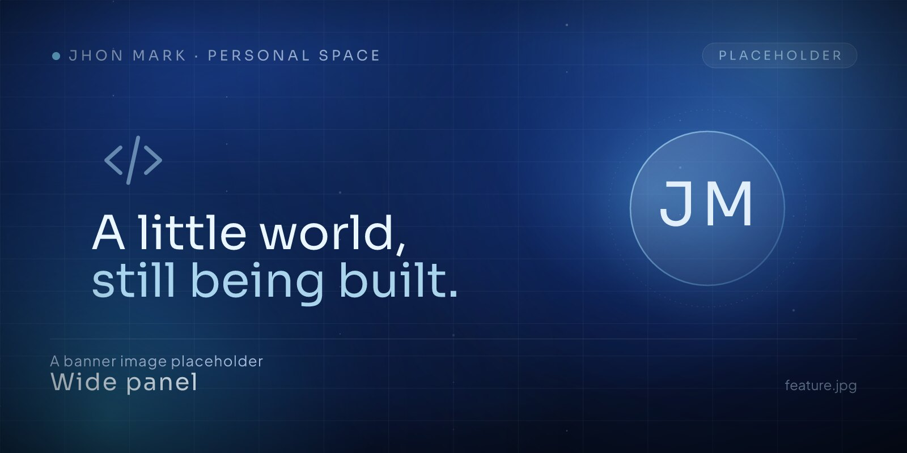

HTML & CSS
Page structure, layouts with flexbox and grid, and the small styling details that make a page feel considered.
Welcome to my little corner of the internet
Currently: A BSIT student, an aspiring developer, a technology enthusiast and a creative soul.
A work in progress, a curious mind, and a collection of little things that make me who I am.
I’m a BSIT student at the University of Makati, learning my way through code, circuits and creative side quests. This is where I keep what I build, what I remember, and what I’m still figuring out.
01 — About me
Not a résumé — just the short version of who I am right now.
“I’d rather understand one thing properly than nod along to ten things I don’t.”
a note to selfHi again — I’m Jhon Mark L. Lumibao, a BSIT student at the University of Makati.
I’m drawn to programming, technology, robotics and creative projects — the kind of things where you can start with an idea, get your hands dirty, and end up with something that actually works. Some days that means wrestling with a Java exercise until it finally makes sense. Other days it means wiring up an ESP32, or nudging pixels around until a page feels right.
Most of my time right now goes into learning the basics properly — understanding why code behaves the way it does instead of just copying something that runs. I’m still at the beginning of that journey, and honestly, I like it here. There’s a lot I want to build, especially things that could be useful to people around me, and I’d like to keep turning this curiosity into real skill.
I’m still growing. I make mistakes, I redo things, and I learn a little more each time. This site is a snapshot of that — not a finished version of me, just an honest one.
Dashed details are placeholders waiting for your real info.
02 — Skills
Honest labels, not buzzwords. These are starting points on the shelf, not finished trophies.
Page structure, layouts with flexbox and grid, and the small styling details that make a page feel considered.
My main language in school — classes, methods, loops and the patient work of understanding why something compiles.
Adding behaviour to pages — small interactions, event listeners and little experiments. Still early, still curious.
Variables, conditions, loops and functions — learning to break a problem into steps before writing a single line.
Sensors, wiring and making things move. The part of tech I can actually hold in my hands.
Small microcontroller experiments — reading sensors, blinking LEDs, and connecting the physical world to code.
Building and driving competition robots — thinking about mechanisms, teamwork and why the robot always turns left.
Little things I’m poking at next:
Skill levels are gentle starting labels, not measurements. Edit them freely in
index.html.
03 — Hobbies & interests
The parts of my day that don’t feel like school — and the ones that quietly teach me the most.
Building small websites just to see what happens. I like starting with something simple and adding one little idea at a time.
where curiosity turns into something visibleTaking things apart, figuring out how they work, and occasionally putting them back together correctly.
hardware makes code feel realLittle experiments with no deadline and no grade — the projects I make because I want to see them exist.
the best excuse to learn something newWatching a video, reading a thread, asking a question — then trying it myself until it stops feeling like magic.
small lessons add upWriting down thoughts I can’t say out loud, and keeping the lines that still feel true a month later.
words are another way of buildingPlaying with colour, spacing and motion until a page feels calm and alive at the same time.
the details are the fun part
Every project starts as a messy idea. Mine just happen to live here.
04 — Gallery
Photos will go here as I collect them — for now, a few placeholders are keeping the frames warm.
05 — Thoughts
Short notes I jot down when the day gets quiet. Starting samples — swap them for your own.
Not everything has to be figured out today. Some things just need a little more time, and a little more trying.
I’d rather understand one thing properly than nod along to ten things I don’t.
The version of me that makes mistakes is still the version that showed up. That counts for something.
06 — Contact
A project idea, a question about something I built, or just a friendly hello — my inbox is open.
jhonmark.lumibao@example.com placeholder
These are obvious placeholders — swap the email and social links in
index.html (search for [EDIT: CONTACT]).
Email is the surest way to get me. I read everything, even if a reply takes a little while — I’m usually between classes or mid-debug.
Open to learning opportunities and collaborations
1 / 9
←→ to browse · Esc to close